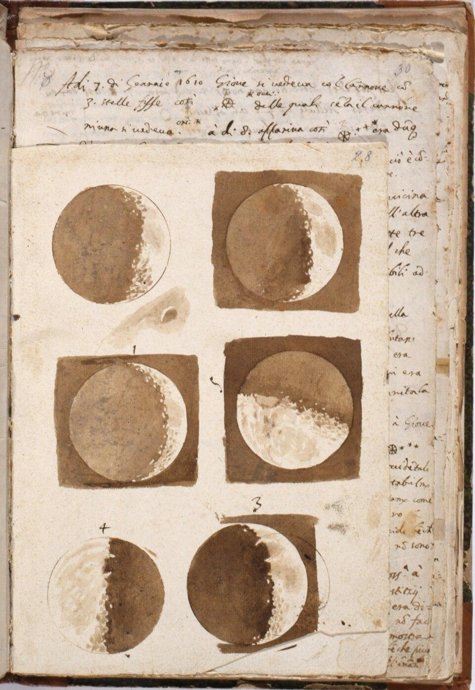
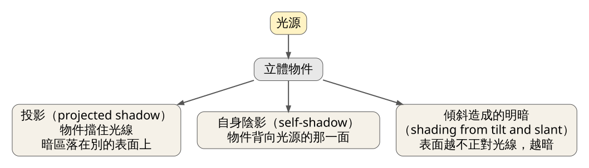
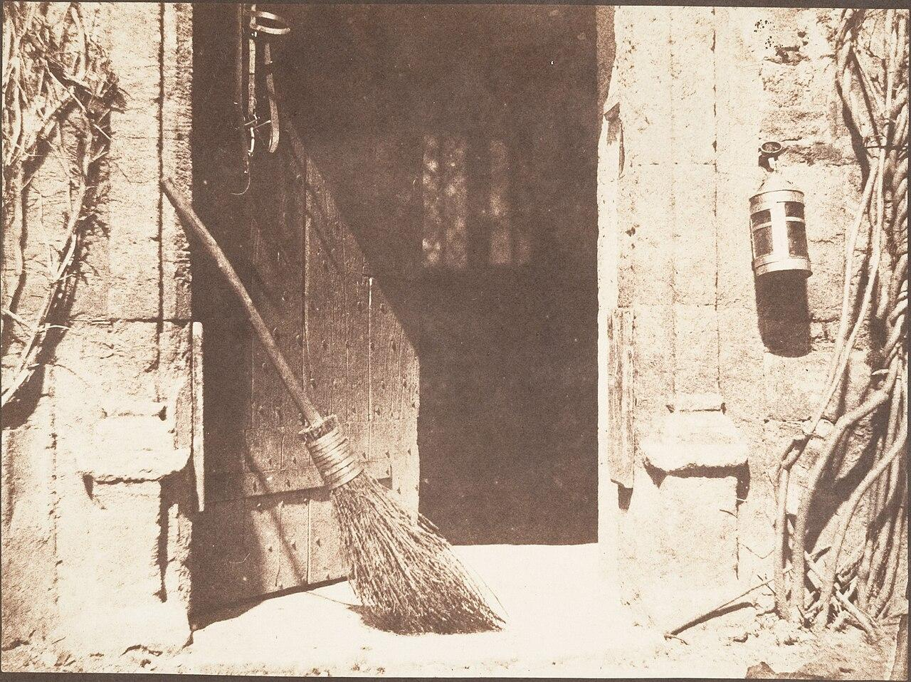
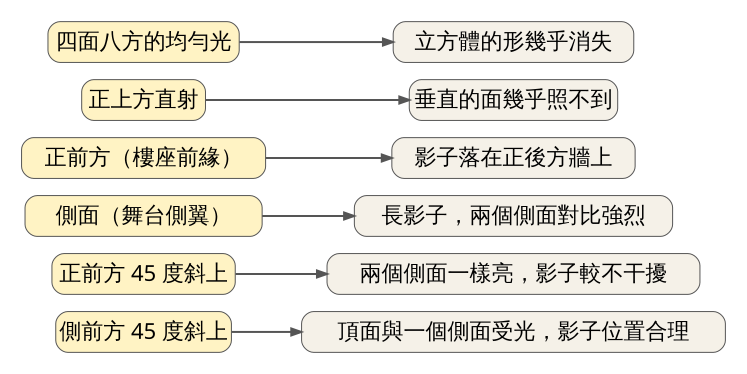

影子帶著資訊：它告訴你光從哪裡來、物體是凸是凹、東西離地面多遠。藝術史學者 Michael Baxandall 在《Shadows and Enlightenment》（1995）把影子分成三種，並追問人怎麼從這些暗部讀出立體。今天學會分辨這三種影子，再用它們判斷一張照片的光從哪個方向來。
史料 1609 年，伽利略（Galileo Galilei）把望遠鏡對準月亮，用褐色淡彩畫下不同月相（見圖 1）。當時的主流看法認為月球是完美光滑的球體。伽利略在 1610 年 3 月出版的《星際信使》（Sidereus Nuncius）裡說了他看到的東西：新月後第四、五天，亮面與暗面的交界線不是一條平滑的弧，而是彎彎曲曲、參差不齊；亮區裡散布著許多小黑點，每個黑點的暗側都朝向太陽，背向太陽的那一側反而鑲著亮邊。

圖 1｜伽利略的月相淡彩素描。注意亮暗交界線上的鋸齒，以及亮區中的小黑點。來源：Galileo Galilei，Disegni originali delle Lune，典藏標示為 1609 年，佛羅倫斯國家中央圖書館藏。授權：Public domain，來源頁面
他拿地球上的日出來比。太陽剛出來時，山谷還在暗處，山頂已經被照亮；太陽越升越高，山谷裡的影子越縮越小。月亮上的小黑點也一樣，受光的範圍擴大，它們的黑就淡去。他還注意到，暗面裡有些亮點跟亮區完全分開，一兩個小時後才慢慢長大、連成一片。他把這些亮點讀成比周圍更早接到陽光的山峰，再用亮點到交界線的距離（有時超過月球直徑的二十分之一）做幾何計算，得出月球上有些山高過 4 義大利哩。
伽利略手上沒有任何直接量高度的工具。他用的只有影子的形狀、方向和它隨時間的變化。
（以上依 Edward Stafford Carlos 1880 年英譯本《The Sidereal Messenger》查核。）
經典理論 Baxandall 在 1995 年由耶魯大學出版社出版《Shadows and Enlightenment》。出版社的介紹引用了他的開場：影子是光裡的洞。書的第一章先處理物理，他抱怨「影子」這個詞用法混亂，於是把它分成三種（見圖 2）：

圖 2｜Baxandall 區分的三種影子。來源：本課程依 Baxandall《Shadows and Enlightenment》（1995）第一章第 2 節的分類繪製。
分類只是開頭。這本書真正的問題是：人看到一片暗，怎麼知道那是凹下去的坑、背光的側面，還是旁邊某個東西投過來的影子？
經典理論 Baxandall 把這個問題放回 18 世紀。第二章從洛克（John Locke）談起：洛克認為，我們看到一顆球時，眼睛收到的其實是一個顏色深淺不一的平面圓，是經驗養成的推論習慣讓我們把它看成立體。接著是著名的「莫利紐茲問題」（Molyneux's question）：一個天生失明、靠觸摸學會分辨球體和立方體的人，若突然恢復視力，能不能光用看的就分出哪個是球？洛克與柏克萊（George Berkeley）答「不能」，萊布尼茲（Leibniz）答「能」。後來 Cheselden 的病例與法國思想家（包括孔狄亞克 Condillac 的「感覺雕像」思想實驗）把這個問題推得更深，討論焦點逐漸落到影子上：一個剛學會看的人，認得出影子代表什麼嗎？
第三章轉到現代認知科學與機器視覺。Baxandall 列出影子對辨認形狀的正反兩面：有幫助的一面，包括「光來自上方」的預設；礙事的一面，包括被別的線索蓋過的影子，以及讓人看錯的影子。他也提到，投影需要一個承接它的表面，觀者得同時推斷光源和那個表面，影子才讀得懂。第四章回到 18 世紀法國畫家與學者如何系統討論明暗、影子邊緣與影子裡的顏色；第五章以夏丹（Jean-Siméon Chardin）的《年輕的素描者》（The Young Draughtsman）作結，Baxandall 把畫中那個靠明暗作畫的年輕人，讀成這整個主題的寓言。（章節內容依該書目錄與 Universalis 書評查核。）
實證研究 心理學實驗提供了另一條線索。神經科學家 V. S. Ramachandran 1988 年在《Nature》發表〈Perception of shape from shading〉：在螢幕上放一排上亮下暗的圓盤，看起來像凸起的小丘；把圖倒過來，同樣的圓盤變成凹洞。他據此主張，視覺系統在判斷明暗時，預設整個畫面只有一個光源，而且光從上方來。這個結論後來有修正：Michael Proulx 2014 年在《PeerJ》發表的實驗中，把真實燈光放在受試者下方，受試者判斷凸凹的方式就跟著改變，連燈光被遮住、沒有直接照到圖片時也一樣。他的結論是，視覺系統會參考實際環境的照明，並不只依靠「光從上方來」這一條預設。（Ramachandran 原文依 Proulx 2014 的轉述，屬二手文獻。）
史料 1844 年 4 月下旬，英國攝影先驅 William Henry Fox Talbot 在英格蘭 Lacock 拍下《The Open Door》（見圖 3）。這張鹽紙相片（由紙底片印出）收入他 1844 到 1846 年分冊出版的《The Pencil of Nature》。蓋蒂博物館的典藏說明指出，Talbot 至少拍過四個版本，他為選這種日常場景辯護時寫道，畫家的眼睛常會停在一般人覺得平凡無奇的地方。

圖 3｜一扇開著的門、一把靠在門板上的掃帚、牆上一盞提燈。來源：William Henry Fox Talbot，The Open Door，1844 年（大都會藝術博物館本，標示為 1844 年 5 月以前）。授權：CC0（大都會藝術博物館開放典藏），來源頁面
拿 Baxandall 的三種影子來拆這張照片。
先找投影。最清楚的一個在右邊：牆上提燈的正下方略偏右，石牆上落著一塊和提燈差不多大的暗影。提燈在上、影子在下，可以反推陽光從上方斜照下來。這塊影子還告訴你一件事：提燈離牆面很近，因為影子緊貼著它，沒有被拉開。
再找自身陰影。門洞裡面幾乎全黑，只透出遠處一扇格子窗的微光。這裡是陽光照不到的室內，照三種影子的分法，屬於光照不到的那一類。門框右側石柱有一道轉進門洞的側面，明顯比朝外的正面暗，你因此看得出石柱有厚度，門洞有深度。
第三種是傾斜造成的明暗。掃帚的草穗是一束圓錐，受光的一側亮，轉向背光處就逐漸變暗，所以它看起來是一團有體積的東西，不是一片剪影。石牆表面的凹凸、門板上的木紋與鉚釘，也都靠這種細小的明暗變化浮出來。
蓋蒂博物館的說明指出，這張照片的構圖被亮暗相間的帶狀區塊分成三段，掃帚、門洞、遠處的窗戶形成三層前後深度。這些深度幾乎都是影子做出來的。陽光從上方來，剛好符合 Ramachandran 說的「光從上方來」預設，所以我們看這張照片很少猶豫：凸的看成凸，深的看成深。你可以把手機裡的照片倒過來看一次，看石牆的凹凸感會不會跟著改變。
Talbot 選了一個陽光從斜上方打在粗糙石面上的時刻，讓影子替他把一扇普通的舊門講清楚。對今天拿手機的人，這張照片的提醒很實際：拍立體的東西，先看光從哪裡來，再看三種影子各落在哪裡。
經典理論 劇場燈光設計師面對同一個問題，只是對象換成演員的臉。Stanley McCandless 在 1932 年出版《A Method of Lighting the Stage》（1947 年第三版修訂），書中用一個立方體示範不同方向的光（見圖 4）：四面八方的均勻光，讓立方體的形幾乎消失；從正上方直射，垂直的面幾乎照不到，打在臉上會留下很深的陰影；從觀眾席正前方平平地打過去，則沒有高光也沒有陰影，形同樣被抹平。

圖 4｜光的方向如何改變一個立方體看起來的樣子。來源：本課程依 McCandless《A Method of Lighting the Stage》第三版（1947）第 12 圖的六種情況繪製。
McCandless 寫道，早在文藝復興時期，人們就發現從一側肩膀後方斜射下來的陽光最能表現立體感，建築師畫透視圖時也沿用這個斜向光的慣例。他的建議是讓光沿著立方體的對角線打過來：平面上偏 45 度，高度上也抬高 45 度。每個表演區用燈從左右兩側交叉照射，一側用暖色，另一側可以用冷色。他的理由很像在描述戶外：太陽的暖光打出影子，影子裡帶著天空的冷藍。
對照 Talbot 的照片，原理相同：讓光斜著來，三種影子各就各位，觀眾就讀得出形狀。差別在於劇場是主動安排光源，攝影師多半是等光、選角度。McCandless 也提到化妝的影響：演員臉上畫的皺紋與凹陷，等於在畫假的「傾斜造成的明暗」，所以他建議用黑或灰而不是藍紫色，因為在冷色光下，藍紫色線條的反光程度和膚色差不多，會消失。
誤解一：影子越重，東西越立體。McCandless 的立方體示範說明，從正上方來的光會留下最重的影子，卻讓垂直面幾乎照不到，臉上留下很深的陰影。Baxandall 也把「讓人看錯的影子」列為影子礙事的一面。立體感靠的是影子的位置和層次。
誤解二：大腦一律假設光從上方來。這個說法常被當成定論引用。Ramachandran 1988 年的實驗確實顯示這種傾向，但 Proulx 2014 年的實驗發現，環境中真實光源的位置會改變人的判斷。比較穩妥的說法是：沒有其他線索時，視覺系統偏向假設光從上方來。
誤解三：影子就是投在地上的那一塊。日常說「影子」，多半只指投影。Baxandall 寫書時第一件事就是拆開這個詞：自身陰影與傾斜造成的明暗，同樣在傳遞形狀的資訊；投影反而還得靠承接它的那個表面才讀得懂。
誤解四：Baxandall 證明了 18 世紀的知覺理論影響了夏丹的畫。這是他的詮釋，不是已證實的史實。1995 年 Peter Campbell 在《London Review of Books》的書評就說，這本書不是一條串起來的論證，比較像一系列注腳，提出問題多於解決問題。
看（5 分鐘） 找一個靠窗、有陽光或檯燈照著的杯子或水果。依序指出：投影落在哪裡、自身陰影在哪一側、表面從亮到暗的漸層在哪一段。再從投影的方向，反推光源的位置。
做（10 分鐘） 關掉房間大燈，只用手機手電筒照同一個雞蛋盒（或一個握起的拳頭），各拍一張：
拍完後，把第三張照片在手機上旋轉 180 度，看雞蛋盒的凹槽會不會變成凸起。
回顧（5 分鐘）
來源 | 類型 | 查核日期 |
Yale University Press：Michael Baxandall, Shadows and Enlightenment（1995）書籍頁 | 經典理論（出版書籍） | 2026-11-19 |
經典理論（原書目錄） | 2026-11-19 | |
Encyclopædia Universalis：Thierry Davila，〈OMBRES ET LUMIÈRES (M. Baxandall)〉書評 | 經典理論（二手文獻） | 2026-11-19 |
Peter Campbell，〈Snookered〉，London Review of Books 17(23)，1995 | 經典理論（書評） | 2026-11-19 |
Galileo Galilei，The Sidereal Messenger，Edward Stafford Carlos 英譯，1880（Internet Archive） | 史料 | 2026-11-19 |
實證研究 | 2026-11-19 | |
J. Paul Getty Museum：William Henry Fox Talbot，The Open Door，1844（Google Arts & Culture 典藏頁） | 史料 | 2026-11-19 |
Stanley McCandless，A Method of Lighting the Stage，第三版，1947（Internet Archive） | 經典理論 | 2026-11-19 |
圖片授權 | 2026-11-19 | |
圖片授權 | 2026-11-19 |
延伸閱讀：Baxandall 書末以夏丹的《年輕的素描者》作結。夏丹以素描者為題畫過不只一個版本，本課未能確認書中討論的是哪一幅，因此不附圖。